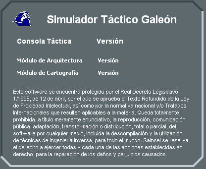

Menú Ayuda
Las opciones del menú Ayuda son:
- Contenido: Muestra la documentación del sistema en formato html, usando el navegador por defecto del Sistema Operativo.
- Acerca de: Muestra la siguiente ventana con información de la versión de la aplicación Consola:
